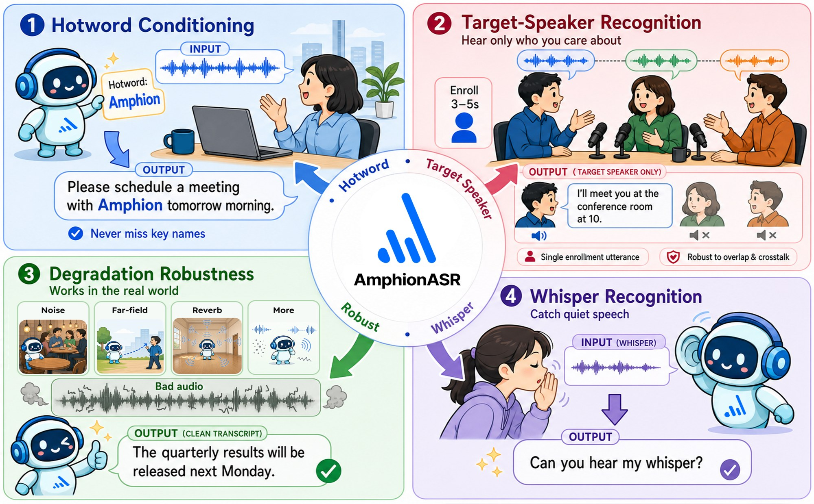
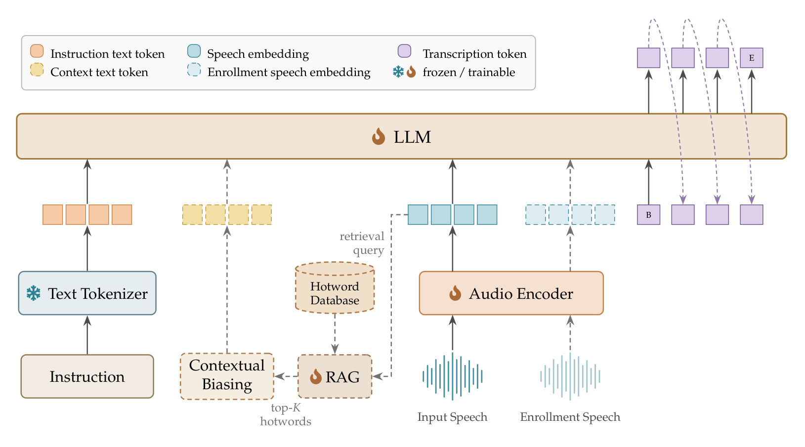

通用转写只是实际 ASR 的一部分。AmphionASR 把热词列表和注册音频当作任务条件，把退化与耳语当作非典型声学输入，输出始终是「被请求的那一路语音」的转写。

细粒度双编码器从约 1 万候选中检索 Top-50，注入 prompt。相对无热词，中英实体误差分别下降 55% 与 37%；在线检索中位额外时延约 1–3 ms。
3–5 秒注册音频 + 混合语音。只转写被点名的说话人；目标不在场时应保持静默。In-house 正例 WER 13.02%，静音虚警 6.10%。
远场、噪声、混响、染色、丢包及其叠加。Voice-in-the-Wild 16 个子集中，有 8 个取得对照系统里的最低 WER。
低能量、非典型激励。中文 wEar CER 0.58%，英文 WTIMIT WER 6.11%，均为报告中的最低误差。
音频编码器把 16 kHz 波形映到 LLM 嵌入空间；文本支路携带指令与可选条件；检索支路在解码前从大词表抽出 Top-K 热词。初始化自 Qwen3-ASR-1.7B，检索适配器 2.6M，从零训练。

三阶段 LoRA SFT：Stage 1 联合更新编码器与 LLM（退化 + 耳语）；Stage 2–3 冻结编码器，加入热词、目标说话人，并回放通用转写以防遗忘。随后对 LLM 做 GRPO，再单独训练检索适配器。
下面只摘录技术报告里最适合 Demo 讲清楚的对照。完整表格、协议边界与未覆盖的结论，以报告正文为准。
对照系统均为通用 ASR（无热词 prompt）。AmphionASR w/ RAG 使用每领域词表、K=50。该对比衡量的是「完整检索偏置流水线」，而不是在相同输入下的检索单独贡献。
| 系统 | TS WER | FAsil |
|---|---|---|
| Qwen3-ASR-1.7B | 78.99 | 100.00 |
| Qwen3-Omni-30B-A3B | 31.91 | 9.15 |
| AmphionASR | 13.02 | 6.10 |
| 系统 | wEar CER | WTIMIT WER |
|---|---|---|
| Whisper-large-v3 | 16.33 | 11.99 |
| Qwen3-ASR-1.7B | 1.22 | 9.56 |
| FireRed-ASR2-LLM | 1.01 | 15.18 |
| AmphionASR | 0.58 | 6.11 |
TS-ASR 的 Qwen3-Omni 为零样本双音频指令；其余保留项目评测 prompt。耳语对照均贪婪解码，无 whisper 专用 prompt。
中英各 12 条。每条都可以直接听输入音频；目标说话人请先听注册音频，再听混合音频。
正在载入样本…
AmphionASR: Personalized Context-Aware Speech Recognition. Amphion Team, 2026.
@techreport{amphionasr2026,
title = {AmphionASR: Personalized Context-Aware Speech Recognition},
author = {{Amphion Team}},
year = {2026},
month = {7},
note = {Technical report}
}